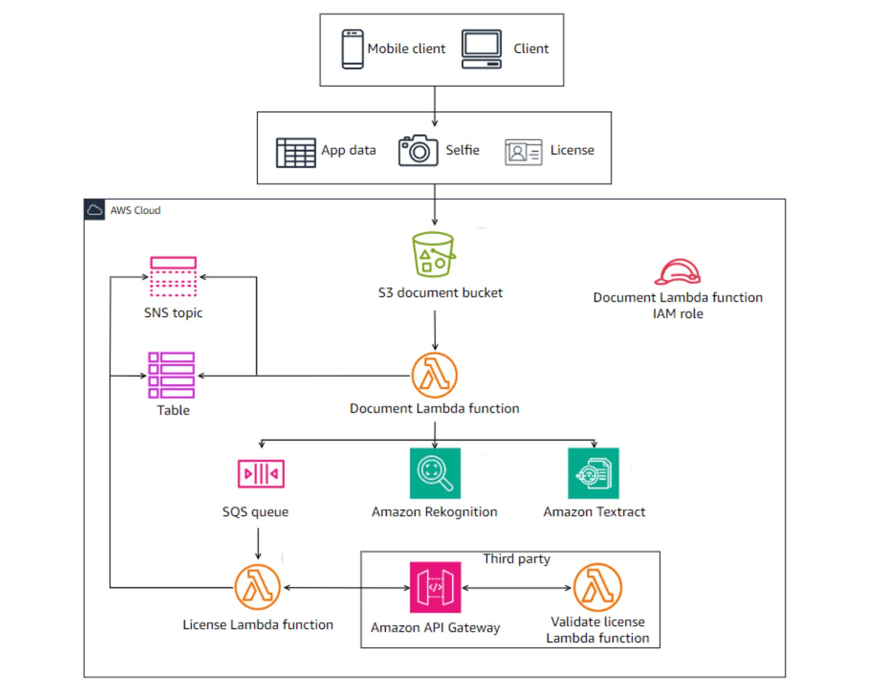

About Me
Hello! I am a registered nurse that is transitioning into a cloud career. I bring years of experience of working in a high-pressure acute setting, where I developed a strong foundation in problem-solving, critical thinking, and customer support. I am currently enrolled in the AWS Cloud Institute, where I am gaining hands-on experience with core AWS services, cloud architecture, and troubleshooting. My goal is to become a highly skilled cloud engineer that designs, supports, and optimizes secure cloud solutions. I aim to grow into a leadership role, where I can help organizations innovate through cloud technologies and mentor others entering the field.
Outside of tech, I love exploring new places, experiencing different cultures, and trying new foods! I am also passionate about staying active so you can find me working out or playing basketball!
Projects
Here are some projects that I have completed.

Bulding a Severless Customer Onboarding Application
In this project, I developed a serverless app using AWS SAM, IAM, Lambda, S3, API Gateway, DynamoDB, Rekognition, and Textract. The app implements secure identify verifcation by integrating AI-driven facial recognition and third-party driver's license validation services to match customer-submitted data ensuring accurate identity matching.
Learn more

Java Web Application Deployment with AWS CI/CD
In this project, I created and deployed a Java-based web application, building a fully automated CI/CD pipeline to streamline app development and deployment. Integrated pipeline with Git repositories for version control and automated build triggers, leveraging AWS CodeBuild,
CodeDeploy, and CodePipeline for CI/CD delivery. Utilized EC2 for hosting and CodeArtifact for managing dependencies
Learn more

Bulding a Personal Portfolio Website
In this project, I configured S3, CloudFront, and Route 53 to host and deliver a secure, scalable static website with low-latency global access.
Learn more